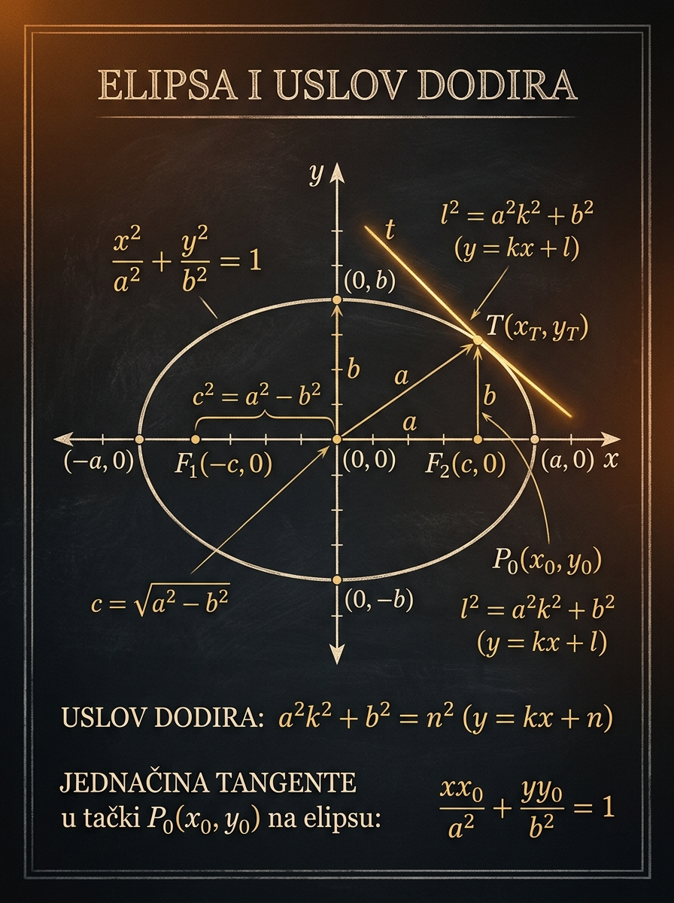

Šta ćeš naučiti
Kako iz jednačine čitaš elipsu i kako gradiš tangentne prave u najčešćim prijemnim situacijama.
Elipsa na prijemnom nije samo “ona kriva sa dva imenitelja”. Moraš da umeš da pročitaš poluose, temena i žiže, ali i da prepoznaš kada prava dodiruje elipsu u jednoj jedinoj tački. Tu se spajaju geometrijska intuicija, diskriminanta i dobra kontrola formule.
Kako iz jednačine čitaš elipsu i kako gradiš tangentne prave u najčešćim prijemnim situacijama.
Mešanje veličina \(a\), \(b\) i \(c\), kao i zaboravljanje da vertikalne tangente ne vidiš kroz \(y=kx+l\).
Tangente paralelne datoj pravoj, tangenta u zadatoj tački i tangente kroz spoljašnju tačku.

U ovoj lekciji više nije dovoljno da samo “prepoznaš krivu”. Moraš da vidiš kako je elipsa postavljena u ravni, gde su joj žiže, koliko je izdužena i šta znači da neka prava ima baš jednu zajedničku tačku sa njom. To je tip zadatka koji na prijemnom razdvaja učenika koji pamti od učenika koji razume.
Elipsa je prirodan nastavak kružnice: i dalje radiš sa krivom drugog reda, ali sada imaš dve različite poluose i dve žiže. Time zadaci postaju bogatiji, a i uslov dodira dobija ozbiljniji oblik.
Prijemni ne traži da mehanički napišeš \(c^2=a^2-b^2\). On proverava da li znaš šta su nepoznate i koja formula zaista odgovara datom uslovu. Zato je važno da razlikuješ tri standardna modela zadatka:
Prvo proveravaš koji imenilac je veći i uz koju promenljivu stoji. To ti govori duž koje ose je elipsa “duža”, pa tek onda smisleno čitaš poluose i položaj žiža.
Geometrijska definicija elipse glasi: elipsa je skup svih tačaka \(M\) u ravni za koje je zbir rastojanja do dve fiksne tačke \(F_1\) i \(F_2\) konstantan. U standardnom položaju centra u koordinatnom početku ta definicija vodi do kanonske jednačine.
Ako su žiže \(F_1\) i \(F_2\), a konstanta jednaka \(2a\), onda za svaku tačku \(M(x,y)\) na elipsi važi:
Broj \(a\) je polovina velike ose. Zato je u standardnoj školskoj notaciji \(a\) vezano za “dužu” poluosu, dok je \(b\) kraća poluosa. Kada je velika osa horizontalna, kanonski oblik je:
Iz ovog oblika odmah vidiš da elipsa seče \(x\)-osu u \((\pm a,0)\), a \(y\)-osu u \((0,\pm b)\).
Kanonska jednačina ti ne daje samo krivu, nego i veoma konkretne podatke o njenom obliku:
Veći imenilac znači dalje dosezanje po odgovarajućoj osi. Zato se učenici često prevare kada samo “vide brojeve”, a ne povežu ih sa osama.
Iz \( \frac{x^2}{16}+\frac{y^2}{4}=1 \) čitaš \(a=4\), \(b=2\), pa su temena \((\pm 4,0)\) i \((0,\pm 2)\).
Na margini nacrtaj koordinatni sistem i odmah obeleži \(\pm a\) i \(\pm b\). Mala skica sprečava pola tipičnih grešaka.
Kada su \(a\) i \(b\) različiti, ne postoji jedan jedinstveni poluprečnik. Upravo zato i uslov dodira izgleda drugačije nego kod kružnice.
Zato što je veći imenilac ispod \(y^2\), pa elipsa može da dosegne dalje po \(y\)-smeru. Tu je duža poluosa jednaka \(5\), a kraća \(3\).
Žiže daju elipsi njen pravi identitet. Što su žiže dalje od centra, elipsa je izduženija. Zato je veza između \(a\), \(b\) i \(c\) jedan od osnovnih prijemnih alata.
Za standardni horizontalni oblik \( \frac{x^2}{a^2}+\frac{y^2}{b^2}=1 \), gde je \(a>b\), važi:
Ovo je jedna od najčešćih tačaka greške: neki učenici po navici napišu \(c^2=a^2+b^2\), mešajući elipsu sa Pitagorinom slikom u pogrešnom smeru. Za elipsu je uvek razlika kvadrata.
Ekscentricitet pokazuje koliko je elipsa “spljoštena” ili “izdužena”. Definiše se kao:
Ako je \(e\) mali, elipsa je bliska kružnici. Ako je \(e\) bliži jedinici, elipsa je izduženija. Na prijemnom se ovo često ne traži samostalno, ali pomaže da ne izgubiš geometrijski osećaj za sliku.
Za \( \frac{x^2}{25}+\frac{y^2}{9}=1 \) važi \(c^2=25-9=16\), pa je \(c=4\) i žiže su \((\pm 4,0)\).
Za svaku tačku elipse zbir rastojanja do žiža ostaje isti i jednak je \(2a\). Zato je baš \(a\) vezan za veliku osu.
Kad god zadatak pominje žiže, fokalno rastojanje ili ekscentricitet, prvo izračunaj \(c\). To obično otvara ostatak zadatka.
Pošto je \(c^2=a^2-b^2\), sledi \(c<a\), pa je i \(\frac{c}{a}<1\). Takođe je \(c>0\) za pravu elipsu, pa je \(e\) između nule i jedinice.
Ako je prava sečica, sa elipsom ima dve zajedničke tačke. Ako je spoljašnja, nema nijednu. Tangenta je baš granični slučaj između ta dva položaja: sistem prava-elipsa ima jedno dvostruko rešenje. Zato je diskriminanta ovde prirodno oruđe.
Za standardnu elipsu
i pravu \(y=kx+l\), posle zamene dobijaš kvadratnu jednačinu po \(x\):
Tangenta znači \(\Delta=0\), pa posle sređivanja dobijaš najvažniji obrazac lekcije:
Ovo je uslov dodira u standardnom koordinatnom položaju. Ako je poznat nagib \(k\), tražiš \(l\). Ako je prava zadata kroz tačku, tada je \(l\) izraz u kome se pojavljuje \(k\), pa dobijaš jednačinu za nagib.
Ako je \(P(x_0,y_0)\) tačka elipse, tangentna prava u toj tački glasi:
Ovo je izuzetno korisna formula jer preskače ceo račun sa diskriminantom kada je tačka dodira već poznata. Samo moraš proveriti da tačka zaista leži na elipsi.
Ako su tangente paralelne datoj pravoj, zadržavaš \(k\), a menjaš samo \(l\). Uslov \(l^2=a^2k^2+b^2\) tada odmah daje dve tangente.
Kroz tačku \(A(x_1,y_1)\) pišeš pravu \(y=kx+(y_1-kx_1)\). Zatim taj izraz za \(l\) ubacuješ u uslov dodira.
Spoljašnja tačka daje dve tangente, tačka na elipsi jednu, a unutrašnja tačka nijednu realnu tangentu.
Zato što iz \(l^2=a^2k^2+b^2\) sledi \(l=\pm\sqrt{a^2k^2+b^2}\). Geometrijski, to su dve međusobno paralelne tangente sa suprotnih strana elipse.
U laboratoriji ispod menjaš poluose elipse i parametre prave \(y=kx+l\). Posmatraj kako se menja broj presečnih tačaka i upoređuj vrednosti \(l^2\) i \(a^2k^2+b^2\). Kada su jednake, prava je tangenta.
Prati tri položaja: dve presečne tačke, jedna tačka dodira ili potpuni izostanak preseka.
Laboratorija radi sa jednačinom \(x^2/a^2 + y^2/b^2 = 1\). Kada je \(a>b\), žiže su na \(x\)-osi; kada je \(b>a\), žiže su na \(y\)-osi.
U sledećim primerima važan je redosled odluka: prvo prepoznaj tip zadatka, zatim izaberi najbolju formulu, pa tek onda računaj. To je prijemna disciplina koja štedi vreme i smanjuje greške.
Za elipsu \( \frac{x^2}{25}+\frac{y^2}{9}=1 \) odredi poluose, temena, žiže i ekscentricitet.
Iz imenilaca odmah vidiš:
Pošto je veći imenilac ispod \(x^2\), velika osa je horizontalna. Zato su temena:
Zaključak: jedan kanonski zapis ti je dao i oblik elipse i sve njene ključne geometrijske elemente.
Nađi jednačine tangenti elipse \( \frac{x^2}{16}+\frac{y^2}{9}=1 \) koje su paralelne pravoj \(2x-y+5=0\).
Data prava je \(y=2x+5\), pa sve paralelne tražene prave imaju oblik:
Ovde je \(k=2\).
Zaključak: kada je nagib poznat, zadatak je gotovo uvek kratak. Najčešća greška je gubljenje drugog znaka.
Nađi jednačinu tangente na elipsu \( \frac{x^2}{25}+\frac{y^2}{9}=1 \) u tački \(P\left(3,\frac{12}{5}\right)\).
Zaključak: kada je tačka dodira poznata, formula \( \frac{xx_0}{a^2}+\frac{yy_0}{b^2}=1 \) je najkraći i najsigurniji put.
Kroz tačku \(A(5,0)\) nađi tangente na elipsu \( \frac{x^2}{9}+\frac{y^2}{4}=1 \).
Svaka prava kroz \(A(5,0)\) može da se zapiše kao:
Ovde je \(l=-5k\).
Za datu elipsu je \(a=3\), \(b=2\), pa:
Zaključak: u zadacima “kroz spoljašnju tačku” ne tražiš odmah tačke dodira, nego najpre nagib tangentnih pravih.
Svaka formula ispod ima svoju prirodnu situaciju. Uči je zajedno sa tipom zadatka u kome se pojavljuje, a ne kao izolovan zapis.
Iz imenilaca čitaš poluose. Veći imenilac pokazuje dužu osu.
Za horizontalni standardni slučaj žiže su \(F_{1,2}(\pm c,0)\). Za vertikalni se sele na \(y\)-osu.
Osnovni uslov dodira za standardnu elipsu i pravu zadatu preko nagiba i odsečka.
Najkraći način da napišeš tangentu u tački \(P(x_0,y_0)\) elipse.
Većina grešaka u ovoj lekciji nije teška matematika, nego loše čitanje slike ili pogrešan izbor formule. Zato ih treba videti unapred.
Najčešća greška je da se bez razmišljanja napiše \(c^2=a^2+b^2\). Za elipsu uvek važi razlika kvadrata, jer je \(c\) manji od \(a\).
Kada iz uslova dodira dobiješ \(l^2=\dots\), moraš napisati oba slučaja \(l=+\sqrt{\dots}\) i \(l=-\sqrt{\dots}\), osim ako zadatak dodatno ne suzi izbor.
Formula \( \frac{xx_0}{a^2}+\frac{yy_0}{b^2}=1 \) važi samo ako je \(P(x_0,y_0)\) tačka elipse. Uvek kratko proveri uvrštavanjem.
Ako slepo tražiš samo prave oblika \(y=kx+l\), možeš prevideti \(x=a\) i \(x=-a\). To je tipična ispitna zamka kada se traže sve tangente.
Na prijemnom zadatke sa elipsom retko dobijaš kao čistu teoriju. Gotovo uvek su upakovani u pitanje o tangenti, parametru ili spoljašnjoj tački. Zato ti treba brza strategija pre nego što krene račun.
Traže se poluose, žiže, ekscentricitet ili temena. Ovakvi zadaci deluju laki, ali su opasni zbog mešanja osa i pogrešnog čitanja većeg imenioca.
Najkraći put: napišeš familiju \(y=kx+l\), zadržiš nagib i iz uslova dodira dobiješ dve vrednosti za \(l\).
Kroz zadatu tačku formiraš pravu sa nepoznatim nagibom. Zatim uslov dodira pretvara zadatak u jednačinu po \(k\).
Često moraš prvo prevesti pravu iz implicitnog oblika u eksplicitni ili obrnuto. Znanje iz lekcije 50 ovde direktno radi za tebe.
Reši zadatke bez gledanja u primere, pa tek onda otvori rešenja. Cilj nije da prepišeš formulu, nego da proveriš da li znaš kad koju formulu koristiš.
Za elipsu \( \frac{x^2}{36}+\frac{y^2}{20}=1 \) odredi poluose, žiže i ekscentricitet.
Nađi tangente elipse \( \frac{x^2}{25}+\frac{y^2}{16}=1 \) koje su paralelne pravoj \(y=3x\).
Napiši tangentnu jednačinu elipse \( \frac{x^2}{25}+\frac{y^2}{9}=1 \) u tački \(P\left(\frac{5}{2},\frac{3\sqrt{3}}{2}\right)\).
Kroz tačku \(A(6,0)\) nađi tangente na elipsu \( \frac{x^2}{16}+\frac{y^2}{4}=1 \).
Da li iz tačke \(A(1,1)\) postoje realne tangente na elipsu \( \frac{x^2}{9}+\frac{y^2}{4}=1 \)?
Proveri položaj tačke u odnosu na elipsu:
Tačka je unutar elipse, pa kroz nju ne mogu da se povuku realne tangente. Zaključak: nema realnih tangenti.
Ako ovu jednu ideju zapamtiš kako treba, moći ćeš i sam da obnoviš većinu formule. Kada prava dodiruje elipsu, sistem ne sme dati dva različita preseka. Zato je diskriminanta nula, a zato i nastaje uslov dodira. Formula dolazi iz ideje, ne obrnuto.
Iz kanonske jednačine čitaš poluose i odmah zaključuješ duž koje ose je elipsa duža.
Za standardni horizontalni slučaj važi \(c^2=a^2-b^2\), pa su žiže na \(x\)-osi.
Za pravu \(y=kx+l\) i elipsu \(x^2/a^2+y^2/b^2=1\) tangenta nastaje kada je \(l^2=a^2k^2+b^2\).
Kada znaš tačku dodira koristi tangentnu jednačinu u tački; kada znaš familiju pravih koristi uslov dodira.